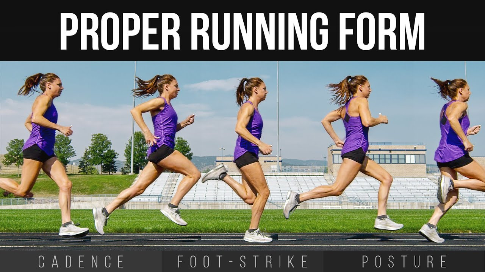

There are 6 main factors to keep in mind when focusing on running form
HEAD
Keep your head straight, keep your ear in line with your shoulders, and keep your gaze 20 feet ahead of you
BREATHING
Inhale through your nose, and exhale through your mouth
ANKLES
Lean forward slightly with a 10-degree bend
ARMS
Maintain a 90-degree angle, and make sure they are constantly moving back and forth
HANDS
Lightly cup your hands
FEET
- Maintain a slight roll in your feet